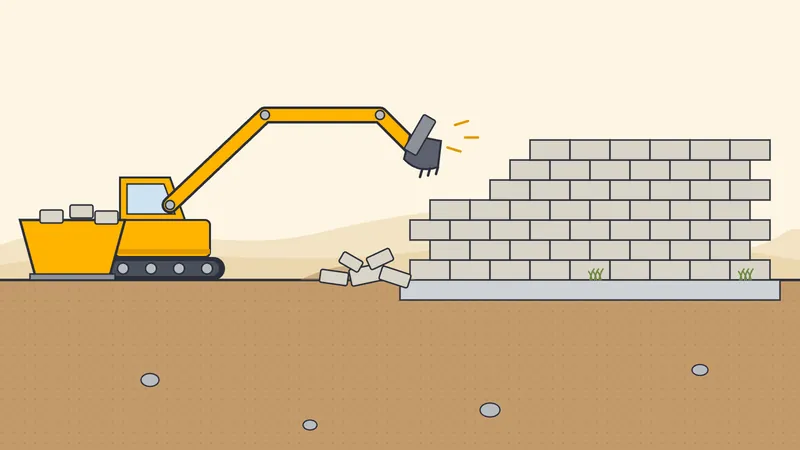

Prix pour démolir un mur en 2027 : clôture, mur porteur, soutènement

Démolir un mur de clôture en parpaing coûte 25 à 50 €/m² HT, fondation et évacuation comprises (indicatif), davantage en pierre ou en béton armé ; une cloison, 15 à 60 €/m² ; une ouverture dans un mur porteur, 1 500 à 4 000 € pour une ouverture courante, étude de structure et linteau compris, et jusqu'à 12 000 € pour une baie de 4 m. Hors forfait, l'évacuation des gravats coûte 25 à 35 €/m³ vers une décharge à moins de 10 km. Le prix dépend ensuite de l'épaisseur, de l'accès des engins et du rôle du mur : porteur ou de soutènement, il ne se touche qu'après un calcul.
Prix de démolition d'un mur : l'essentiel
Un mur se démolit pour 15 à 120 €/m² HT selon sa nature, et une ouverture dans un mur porteur se paie à l'unité, selon sa largeur. Les lignes « indicatif » sont des fourchettes du marché ; les autres viennent de notre grille de tarifs 2027 et de nos guides.
| Type de mur | Prix HT | Unité | Ce qui est compris |
|---|---|---|---|
| Cloison en plaques de plâtre | 15 à 30 € | m² de cloison | Dépose, tri du plâtre |
| Cloison en brique ou parpaing | 30 à 60 € | m² de cloison | Marteau-piqueur, gravats inertes |
| Mur de clôture en parpaing (indicatif) | 25 à 50 € | m² de mur | Démolition, semelle, évacuation |
| Mur de clôture en pierre (indicatif) | 40 à 80 € | m² de mur | Démolition, semelle, évacuation |
| Mur en béton armé (indicatif) | 60 à 120 € | m² de parement | Brise-roche, coupe des aciers, hors évacuation |
| Ouverture courante dans un mur porteur | 1 500 à 4 000 € | par ouverture | Étude de structure et linteau, hors finitions |
| Baie de 2 à 3 m dans un mur porteur (indicatif) | 2 500 à 6 000 € | par ouverture | Étude, étaiement, IPN, hors finitions |
| Baie de 4 m dans un mur porteur (indicatif) | 4 500 à 12 000 € | par ouverture | Étude, étaiement, IPN, hors finitions |
| Nouveau mur de soutènement | 150 à 450 € | m², fourni et posé | À prévoir avant toute démolition |
| Évacuation des gravats inertes | 25 à 35 € | m³, décharge à moins de 10 km | Chargement, transport, décharge |
Combien coûte la démolition d'un mur de clôture ?
Démolir un mur de clôture en parpaing coûte 25 à 50 €/m² HT, semelle et évacuation comprises, soit 45 à 90 €/ml pour un mur de 1,80 m de haut (indicatif). Comptez 40 à 80 €/m² pour un mur en pierre, deux fois plus épais, et 60 à 120 €/m² de parement en béton armé, hors évacuation.
- Parpaing. La mini-pelle abat le mur par travées et charge dans la foulée ; poteaux et chaînages demandent un brise-roche et la coupe des aciers.
- Béton armé. Brise-roche, cisaillage des armatures et, contre une construction à préserver, sciage au disque à 15 à 30 €/ml, comme pour une dalle béton.
Un petit mur se facture surtout au temps d'engin : 500 à 600 € la journée de mini-pelle avec chauffeur, plus le transport de la machine. Sans accès pour une mini-pelle, tout se fait au marteau-piqueur et le prix monte dans la fourchette.
Combien coûte une ouverture dans un mur porteur ?
Ouvrir un mur porteur coûte 1 500 à 4 000 € HT pour une ouverture courante, étude de structure et linteau compris, puis 2 500 à 6 000 € pour une baie de 2 à 3 m et 4 500 à 12 000 € pour 4 m, étude et étaiement inclus (indicatif), finitions en plus. On reporte alors ses charges sur une poutre, toujours dans cet ordre :
- Note de calcul d'un bureau d'études structure : charges, profil de la poutre, dimension des appuis. Rien ne commence sans elle.
- Étaiement : étais et chevalets soutiennent les planchers avant qu'on retire une brique.
- Pose de la poutre sur ses appuis, calage au mortier sans retrait, puis démolition de la maçonnerie en dessous.
- Désétaiement une fois le calage durci, puis finitions.
IPN ou HEA ?
Ce sont deux poutrelles d'acier en I. L'IPN, aux ailes étroites et inclinées, est le profil traditionnel ; le HEA, aux ailes larges, porte davantage à hauteur égale. Le bureau d'études choisit. Supprimer tout un mur porteur se chiffre après étude.
Copropriété et façade : les autorisations
En copropriété, les murs porteurs sont en général des parties communes : les ouvrir exige un vote de l'assemblée générale (article 25 de la loi du 10 juillet 1965). Une ouverture en façade demande une déclaration préalable, ou un permis de construire si elle accompagne un changement de destination.
Peut-on démolir un mur de soutènement ?
Oui, mais jamais sans solution de remplacement dimensionnée à l'avance : un mur de soutènement retient la poussée des terres, et le supprimer peut faire glisser le talus chez vous ou chez le voisin. La poussée croît avec la hauteur et l'eau du sol. L'ordre est donc : étude de sol et de structure du nouvel ouvrage, puis démolition par tronçons courts, chacun remplacé avant d'ouvrir le suivant, les terres étant talutées ou blindées entre-temps.
Démolir un mur de soutènement en béton armé coûte 60 à 120 €/m² de parement (indicatif), hors évacuation ; c'est le remplacement qui pèse : 150 à 450 €/m² fourni et posé selon la technique. Notre guide du mur de soutènement compare les techniques.
Cloison ou mur porteur : comment faire la différence ?
Une cloison ne porte que son propre poids et se démolit pour 15 à 30 €/m² en plaques de plâtre ou 30 à 60 €/m² en brique ou parpaing ; un mur porteur soutient planchers ou toiture. Quelques indices, à faire confirmer par un professionnel :
- l'épaisseur : 5 à 10 cm pour une cloison, 15 cm et plus pour un porteur, et les façades sont presque toujours porteuses ;
- la position : un mur central, perpendiculaire aux solives ou aligné sur un mur de l'étage ;
- les plans du permis de construire ou du règlement de copropriété.
Pour vider tout un logement, le curage coûte 20 à 60 €/m² habitable (voir le coût de démolition d'une maison).
Évacuation des gravats : quel volume et quel prix ?
Évacuer les gravats d'un mur coûte 25 à 35 €/m³ vers une décharge à moins de 10 km, 30 à 45 €/m³ entre 10 et 25 km et 40 à 60 €/m³ au-delà, chargement et transport compris. Comptez un foisonnement de 1,3 à 1,4 : démoli, un mur occupe 30 à 40 % de volume en plus.
La benne est l'autre option : 250 à 400 € pour 8 m³ d'inertes, 380 à 600 € pour 15 m³, pose et enlèvement compris. Vérifiez que la taxe de décharge (4 à 12 €/t) est incluse, triez inertes, plâtre et bois, sinon tout part au tarif le plus élevé, et exigez le bordereau de suivi des déchets. Détails dans notre guide du prix de l'évacuation des gravats.
Exemple chiffré : 12 ml de mur de clôture en parpaing de 1,80 m
Démolir 12 ml de clôture en parpaing de 1,80 m, fondation comprise, et évacuer les gravats revient à 970 € HT, soit 1 164 € TTC, avec ces hypothèses : parpaing de 20 cm, semelle de 40 × 30 cm, une journée de mini-pelle, décharge à moins de 10 km, prix pris au milieu des fourchettes.
Le mur fait 12 × 1,80 = 21,6 m². En place, il représente 12 × 1,80 × 0,20 = 4,32 m³ et la semelle 12 × 0,40 × 0,30 = 1,44 m³, soit 5,76 m³ ; foisonnés, 5,76 × 1,3 = 7,5 m³ à évacuer.
| Poste | Calcul | Montant HT |
|---|---|---|
| Mini-pelle avec chauffeur : démolition, semelle, chargement | 1 jour × 550 € | 550 € |
| Amenée et repli de la mini-pelle (indicatif) | Forfait aller-retour | 150 € |
| Évacuation des gravats inertes | 7,5 m³ × 30 €/m³ | 225 € |
| Remblai de la tranchée en tout-venant | 1,5 m³ × 30 €/m³ | 45 € |
| Total HT | 550 + 150 + 225 + 45 | 970 € |
| TVA à 20 % | 970 × 0,20 | 194 € |
| Total TTC | 970 + 194 | 1 164 € |
Soit 970 ÷ 21,6 = 45 € HT par m² et 81 € par mètre ; aux bornes des fourchettes, 868 à 1 073 € HT. Semelle laissée sous le sol : 5,6 m³ à évacuer (168 €), sans remblai, soit 868 € HT. En pierre de 50 cm : 12 × 1,80 × 0,50 × 1,3 = 14 m³ de gravats (420 €) et une journée et demie d'engin (825 €), soit 825 + 150 + 420 + 45 = 1 440 € HT, ou 67 €/m². TVA à 20 % par prudence ; 10 % possible sur un logement de plus de deux ans.
Un mur à démolir dans les Bouches-du-Rhône ?
STP Terrassement chiffre dans un même devis la démolition à l'engin, la dépose des fondations et l'évacuation des gravats, avec plus de 15 ans d'expérience de l'équipe. Pour un mur porteur ou de soutènement, partez de la note d'un bureau d'études.
Pressé ? 07 45 14 20 49 ou WhatsApp
Amiante : quand faut-il un repérage avant de démolir un mur ?
Un repérage amiante est obligatoire avant de démolir ou d'ouvrir un mur dans un bâtiment dont le permis de construire a été délivré avant le 1er juillet 1997 ; comptez 300 à 600 € pour un diagnostic avant travaux, que le propriétaire commande avant le devis définitif. L'amiante se loge dans des enduits, des colles, des conduits et des plaques en fibrociment, y compris sur de vieilles clôtures. S'il y en a, le retrait revient à une entreprise certifiée, avant la démolition, pour 20 à 50 €/m² environ.
Mur mitoyen : faut-il l'accord du voisin ?
Oui : un mur mitoyen appartient aux deux voisins, et aucun ne peut le démolir, le percer ou y appuyer un ouvrage sans l'accord de l'autre (Code civil, articles 653 et suivants). Le mur qui sépare deux jardins, deux cours ou deux bâtiments est présumé mitoyen, sauf titre ou marque contraire : vérifiez les actes. Mettez l'accord par écrit, frais compris ; à défaut, les travaux se règlent par experts, au besoin devant le juge. Un mur de soutènement, lui, appartient en principe à celui dont il retient les terres.
Permis, DICT, voirie : les démarches avant de démolir un mur
Démolir un mur isolé ne demande en général aucune autorisation d'urbanisme, sauf en secteur protégé ou dans une commune qui a institué le permis de démolir, comme Aix-en-Provence : voir notre guide du permis de démolir. Près de réseaux enterrés, fréquents au pied d'une clôture sur rue, les déclarations DT-DICT sur le guichet unique des réseaux précèdent les travaux d'une à deux semaines. Une benne posée sur la voie publique demande une autorisation de la mairie.
Comment nous établissons ces prix
Ces prix sont indicatifs, hors taxes, pour les Bouches-du-Rhône en 2027. Cloisons, ouverture courante de mur porteur, évacuation, engins et soutènement neuf reprennent notre grille et nos guides ; murs de clôture, grandes baies et béton armé, marqués « indicatif », viennent de fourchettes constatées sur des devis du secteur. Hors cas particuliers (amiante, mur protégé ou fragile, accès très difficile). Mise à jour le 26 novembre 2026.
Questions fréquentes
Quel est le prix pour démolir un mur ?
Comptez 25 à 50 €/m² HT pour un mur de clôture en parpaing, semelle et évacuation comprises (indicatif), 15 à 60 €/m² pour une cloison et 1 500 à 4 000 € pour une ouverture courante dans un mur porteur, étude et linteau compris.
Combien coûte la démolition d'un mur de clôture au mètre linéaire ?
Pour un mur en parpaing de 1,80 m, 45 à 90 €/ml HT, semelle et évacuation comprises (indicatif). Notre exemple de 12 ml revient à 970 € HT, soit 81 € par mètre et 1 164 € TTC.
Combien coûte l'ouverture d'un mur porteur avec un IPN ?
De 1 500 à 4 000 € HT pour une ouverture courante, étude de structure et poutre comprises ; 2 500 à 6 000 € pour une baie de 2 à 3 m et 4 500 à 12 000 € pour 4 m, étaiement inclus (indicatif). Les finitions sont en plus.
Faut-il une autorisation pour démolir un mur ?
Pour un mur isolé, en général non, sauf en secteur protégé ou dans une commune qui a institué le permis de démolir. Une ouverture en façade demande une déclaration préalable, et en copropriété l'ouverture d'un mur porteur exige un vote de l'assemblée générale.
Peut-on démolir un mur mitoyen sans l'accord du voisin ?
Non. Un mur mitoyen appartient aux deux propriétaires : le démolir ou le percer demande l'accord du voisin, de préférence écrit, ou à défaut un règlement par experts, au besoin devant le juge.
Que doit contenir un devis de démolition de mur ?
Des lignes séparées pour la démolition, la fondation, l'évacuation et la remise en état, avec les quantités en m², ml et m³, le taux de TVA et la destination des gravats. Dans un bâtiment d'avant juillet 1997, il tient compte du repérage amiante.